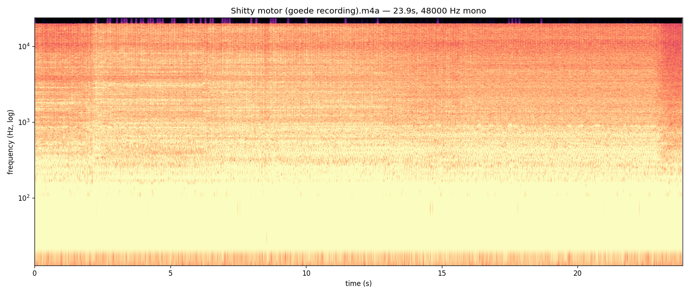
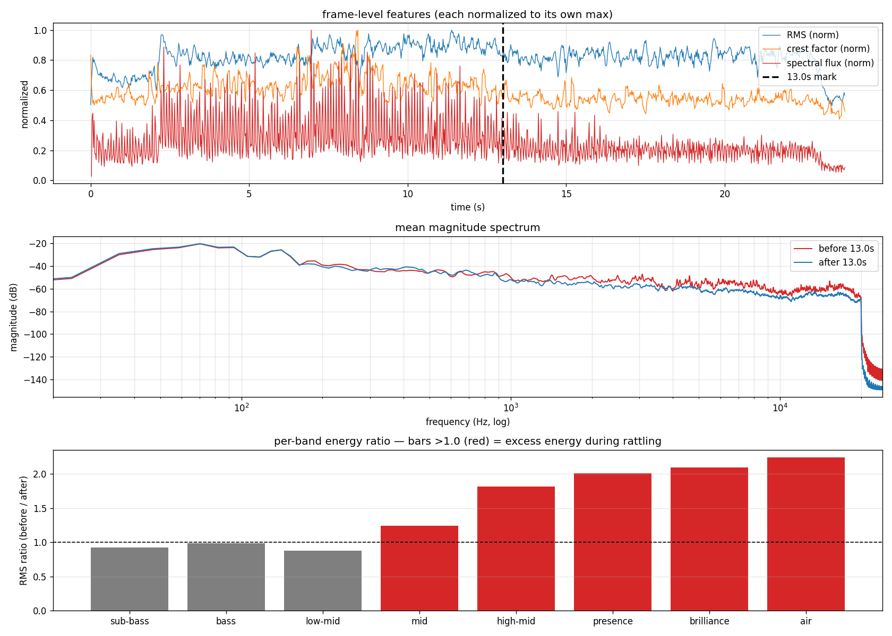
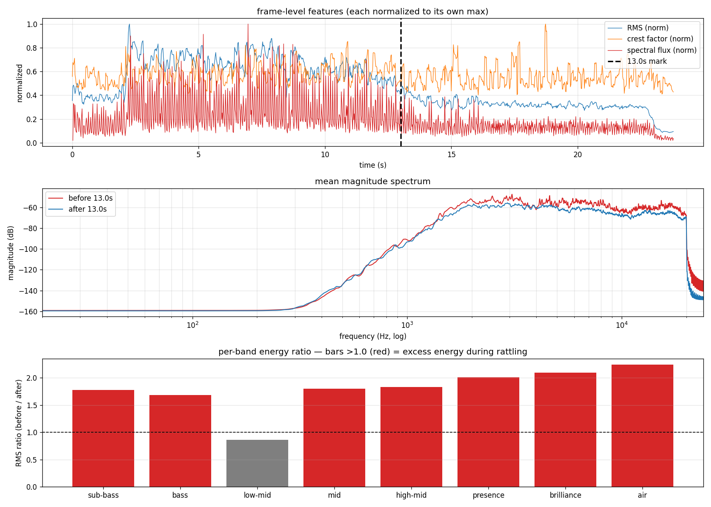

engine-sound-splitter
Splits a recording into low-band (combustion drone) and high-band (mechanical rattles) stems via complementary Butterworth crossover. source on github.
Audio
Original recording m4a
Untouched input — motorcycle engine with intermittent rattles.
Engine stem mp3 · low band, < 1800 Hz
Combustion drone, idle fundamentals, low-mid body.
Rattles stem mp3 · high band, > 1800 Hz
Mechanical rattles, knocks, dangling-part chatter.
Spectrogram

Analysis
Frame features and per-octave-band energy contrast across the 13 s mark.

Same analysis applied to rattles.wav — validates the
split.
